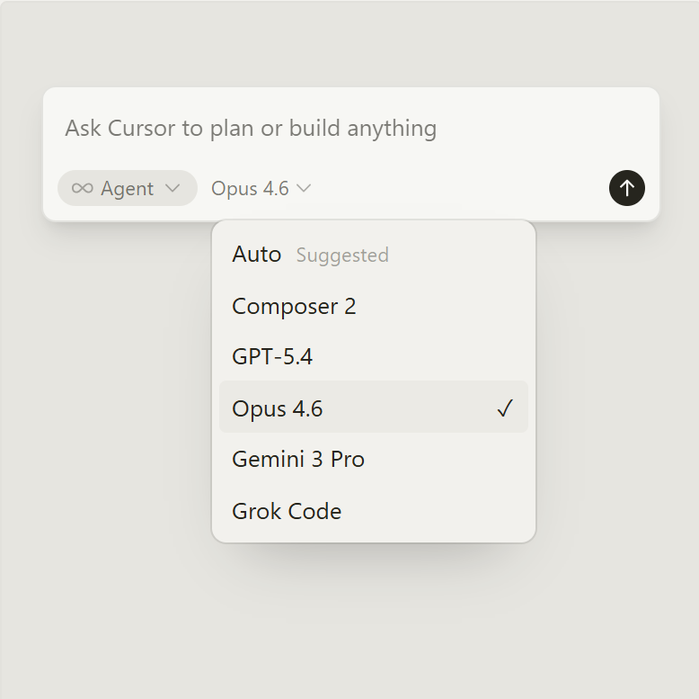
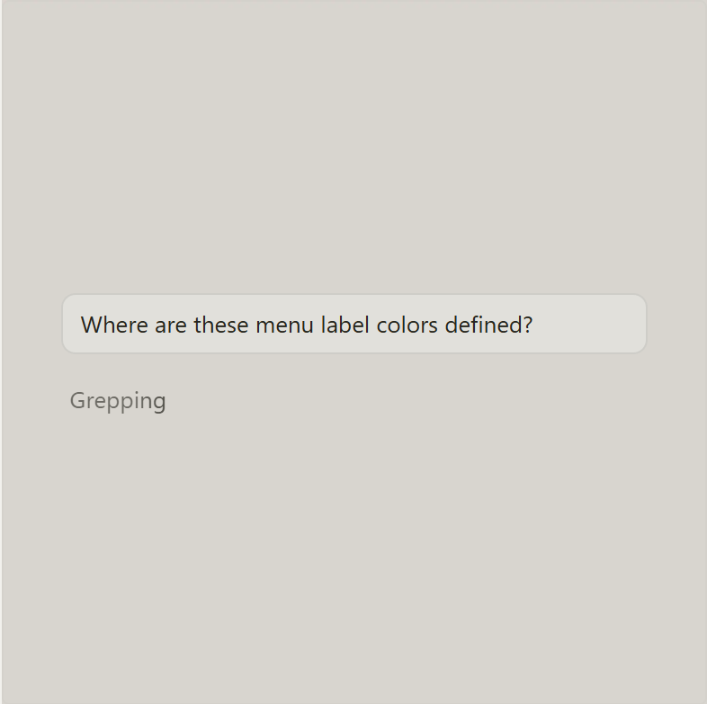

Built to make you extraordinarily productive, Cursor is the best way to code with AI.

Trusted every day by teams that build world-class software
Agents turn ideas into code Accelerate development by handing off tasks to Cursor, while you focus on making decisions.
Learn about agentic development →

Works autonomously, runs in parallel Agents use their own computers to build, test, and demo features end to end for you to review.
Learn about cloud agentic →In every tool, at every step Cursor reviews your PRs in GitHub, collaborates in Slack, and runs in your terminal.
Learn about Cursor's surfaces →

Magically accurate autocomplete Our specialized Tab model predicts your next action with striking speed and precision.
Learn about Tab →The new way to build software.
“It was night and day from one batch to another, adoption went from single digits to over 80%. It just spread like wildfire, all the best builders were using Cursor.”

Diana Hu
“My favorite enterprise AI service is Cursor. Every one of our engineers, some 40,000, are now assisted by AI and our productivity has gone up incredibly.”

Jensen Huang
“The best LLM applications have an autonomy slider: you control how much independence to give the AI. In Cursor, you can do Tab completion, Cmd+K for targeted edits, or you can let it rip with the full autonomy agentic version.”

Andrej Karpathy
“Cursor quickly grew from hundreds to thousands of extremely enthusiastic Stripe employees. We spend more on R&D and software creation than any other undertaking, and there's significant economic outcomes when making that process more efficient.”

Patrick Collison
“The most useful AI tool that I currently pay for, hands down, is Cursor. It's fast, autocompletes when and where you need it to, handles brackets properly, sensible keyboard shortcuts, bring-your-own-model... everything is well put together.”

shadcn
“It's definitely becoming more fun to be a programmer. We are at the 1% of what's possible, and it's in interactive experiences like Cursor where models like GPT-5 shine brightest.”

Greg Brockman
Stay on the frontier
Use the best model for every task
Choose between every cutting-edge model from OpenAI, Anthropic, Gemini, xAI, and Cursor.
Explore models ↗
Complete codebase understanding
Cursor learns how your codebase works, no matter the scale or complexity.
Learn about codebase indexing ↗
Develop enduring software
Trusted by over half of the Fortune 500 to accelerate development, securely and at scale.
Explore enterprise →Changelog
Multitask, Worktrees, and Multi-root Workspaces
Canvases
CLI Debug Mode and /btw Support
Tiled Layout and Upgraded Voice Input in the Agents Window
Cursor is an applied research team focused on building the future of software development.
Join us →
Recent Highlights
A technical report on Composer 2
Meet the new Cursor
Introducing Composer 2
How we compare model quality in Cursor